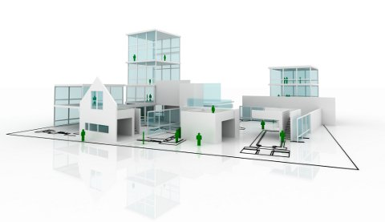

Homepage
http://www.greenbuilding-class.org/
Schedule
Starts: 01/2012
Description
This class is for students who are passionate about improving the sustainability of the built environment and want to learn about how to manage project teams to design and build sustainable buildings. Sustainable buildings do more for their users and they are built productively and with environmental and social sensitivity. This can only happen if everybody involved in making and using a building participates when their input is most useful and if the whole process is managed well. Such an integrated and holistic project management approach requires a new mindset and novel methods, which are taught in the class.
Require
The class is an entry-level course at the university level. Some of the concepts will be more accessible to students with basic knowledge about the design and construction process, engineering economy, and accounting.
Instructor
Martin Fischer is best known globally for his work and leadership in developing virtual 4D (time plus 3D) modeling methods to improve project planning, increase the productivity of project teams, and further the sustainability of the built environment. His research focuses on modeling, predicting, measuring, and improving the life-cycle performance of the built environment. His award winning research results have been used by many small and large industrial and government organizations around the world. He has lived, worked, consulted, and taught in Europe, South America, North America, and Asia. He holds a Diplome d'Ingenieur from the Swiss Federal Institute of Technology in Lausanne, a MS in Industrial Engineering-Engineering Management and a PhD in Civil Engineering from Stanford University.
Include
- lecture videos, which may contain integrated quiz questions
- standalone quizzes
- we hope to transcribe the lectures into text